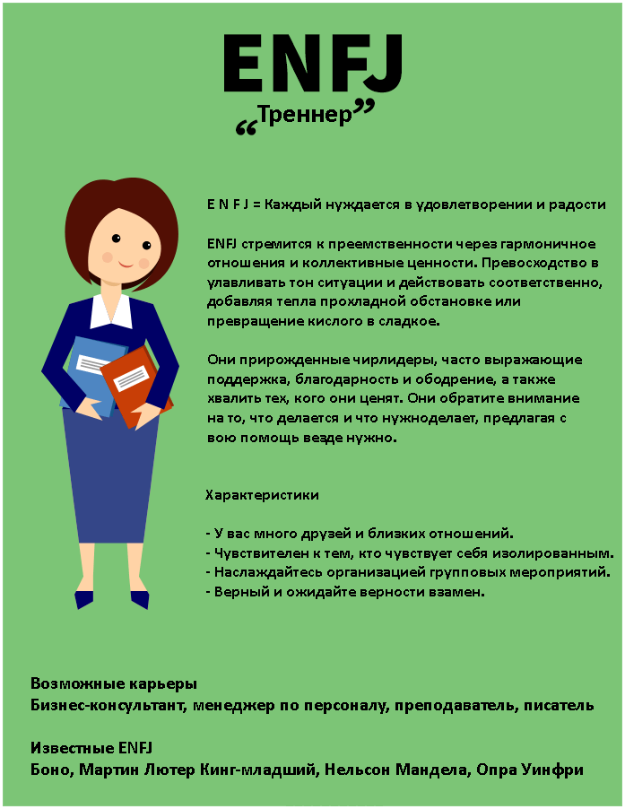

Тренер – еще один тип характера человека. Для людей, владеющих этим типом характера, достижение гармонии в общении с окружающими является как целью всей жизни, так и искусством, в котором они пытаются достигнуть всегда наибольшего совершенства.
Отличительная черта их характера — эмоции — одаряет их возможностью разгадывать чувства и настроения людей, одновременно вселяя в них желание сделать людей счастливее. Душевные, проницательные и дружелюбные, тренеры настолько хорошо ощущают окружающих, что готовы перехватывать их желания и в особенности их эмоции. Они всегда оказываются на высоте и удачно помогают людям решить их собственные проблемы, частенько нетривиально и креативно.
Оживленные, полные интереса и естественно говорящие исключительно по существу, люди, обладающие характером тренера, часто становятся талантливыми ораторами, награжденными возможностью понять, что желает услышать аудитория. Имея самобытный дар завязывать знакомства, они искусно удерживают диалог как один на один, так и в компании. От природы тактичные и обходительные, тренеры гордятся тем, что могут поселить в собеседника чувство уюта и покоя. Они готовы пойти на любую крайность в стремлении не причинить горе и не ранить чувства других.
Ведомой функцией характера данных людей представляется логика, но они зачастую страдают от недостатка объективности. Тренеры могут быть чрезмерно сентиментальными и принимать чрезвычайно близко к сердцу абсолютно не касающиеся к ним вещи. Кроме, они могут чувствовать трудности при попытке обнаружить здравое решение, ибо совершенно лишены понимания, чье поведение завоевывает доверия ‚ чье — нет. Точно так же они лично не верят в то, что смогут принять справедливое решение В порыве угодить и посодействовать окружающим они могут взвалить на себя значительно больше проблем, чем смогут разрешить и в конечном итоге чувствуют себя подавленными и непонятыми.
Поскольку представители данного типа характера намерены хвалить свои взаимоотношения с людьми, они могут сильно разочаровываться, иногда их подводят люди, каким они доверяли. А так как для них гораздо значительнее угодить окружающим, они могут принести честность в жертву гармонии.
Большинство людей-тренеров — плодородные и высокоорганизованные люди, заполненные энергией. Притом любые контакты еще сильнее усиливают энергию данных людей, становящихся все более обаятельными собеседниками. Они в пребыванье искусно манипулировать несколькими идеями (и/или проектами) одновременно, подчеркивая каждой из них необходимое обилие энергии и внимания. Удобнее только они чувствуют себя, располагая порядок и выполняя его совместно с коллективом, благодаря чему все двигаются к установленной цели. Эти люди ощущают себя на вершине блаженства, когда им удается посодействовать кому-нибудь обнаружить свои утаенные таланты.
Понимая глобальные вопросы и интересуясь ими, тренеры, естественно, имеют свое аргументированное мнение, каким делятся с окружающими. Но иногда они настолько торопятся принять решение или выполнить задание, что преждевременно выбрасывают большинство альтернатив.
В конечном итоге тренеры могут учесть не всю информацию и решить вопрос не так хорошо, как могли бы. В собственном желании завершить работу как возможно быстрее, не отходя при всем при этом от намеченного прежде плана, они могут лишиться гибкости мышления и способность правильно реагировать на поправку в ситуации. Но едва у них начинает кружиться голова от осознания личной значимости и величины своего вклада в всеобщее дело, они делают шаг назад и реконструируют внутреннее спокойствие.